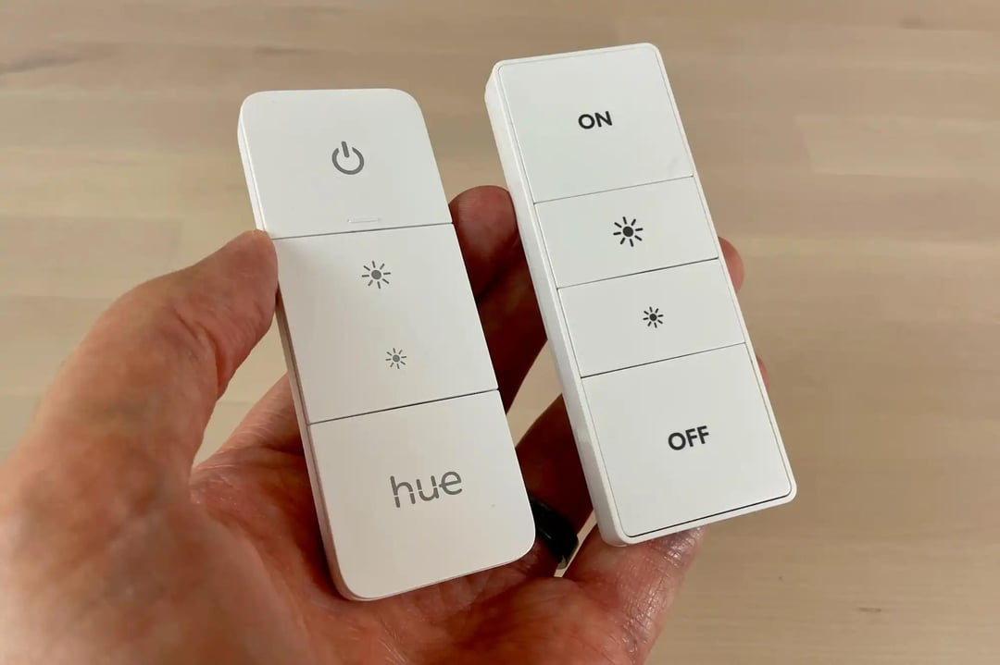
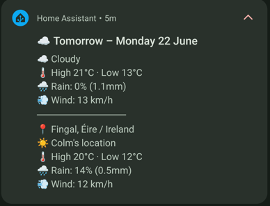

How the House Works 🏡
A quick guide to what the house does by itself, and the few things worth knowing
how to drive. Tap a section to begin.
Start here: finding your way
On a phone, the bar at the bottom of the screen has Home, House, Energy, Security and Music — tap one to go there.
If a section has more than one page, they show just above it in the same bar — tap one to switch.

Energy is open, with its four pages above.
| Section | What’s in it |
|---|
| Home | Everything at a glance — one page |
| House | Map (the 3D house) · Rooms (tap a room) |
| Energy | Heating · Solar & battery · Appliances · Cars & fuel |
| Security | CCTV · Alarm · Doorbell |
| Music | Music Assistant — music around the house |
More
Tap More (the ••• at the end of the bar) for the rest: AudioMuse, the Night sky, the Map (where everyone is) and this guide.

More.
- Music Assistant and AudioMuse have their own screens. To get back: in AudioMuse tap ☰ at the top; in Music Assistant tap its ☰ (bottom left), then Home Assistant.
- On a computer the sections are down the left, with More at the bottom.
The line at the top
Every page starts with a line showing what matters most right now: the house mode, the alarm for the house and the shed, and the weather outside. On Home a second line adds the solar, what the house is using, the battery and the grid.

The top of Home on a phone.
- Tap any of them to jump to that part of the app — the temperature opens the weather.
- When Met Éireann has a weather warning out, a strip in its colour (yellow, orange or red) appears under the line on every page, saying what it is and until when. Tap it for the details. It goes away by itself when the warning ends.
- On a phone the line tucks away as you scroll down and comes back as soon as you scroll up.
1. House Mode — the brain
The house keeps one overall state, and almost everything follows it. You never normally need to
set it — it works itself out from who's home and what's happening.
| Mode | When | What happens |
|---|
| Home | At least one of us is in |
Alarm off, heating comfortable (warmest in the evening) |
| Away | Everyone out ~20 min, no movement inside |
Alarm arms fully, heating eases back, camera alerts become urgent |
| Sleeping | Late: TVs & lights off, still 20 min |
Alarm arms the perimeter, heating drops to the night temperature |
Coming home from Away: the moment one of us arrives, the house
switches to Home and disarms itself — you'll hear "House alarm disarmed." Nothing to do.

On the phone, House Mode is the bar under the rooms on the Home page. Tap it to open, pick a mode; tap outside to close without changing anything.
Storm and Maintenance are automatic — they light up by themselves (Storm during a weather warning, Maintenance while Colm is working on things) and need nothing from you. On the closed bar they show as ⛈ and 🔧, amber when on.
2. Rooms
Every room has its own page. Tap House in the bar, then Rooms, and tap a room — or tap its picture on Home.

Rooms — each room shows its temperature and how many lights are on.
- Tap a room’s picture on Home to open that room’s page —
lights, temperature and anything else that lives in the room.
- Tap the picture again on the room’s page to come straight back to Home.

The room pictures on Home — tap one to open that room.
A room’s page has the All Lights bar (tap along it to set the brightness), each light, the room’s scenes, what’s playing in the room and the TV remote.

The Kitchen page — lights and scenes at the top.
Remotes
- Harmony (Kitchen and Sitting Room): tap what you want to do, like Watch SHIELD or Listen to Music, and it turns on everything it needs. Power off all devices turns it all off.
- TV remote (Sitting Room, Kitchen, Cian’s and Aoife’s rooms): works like the real remote. The app buttons at the bottom open that app straight away.

The Harmony buttons — the top right shows what’s on now.

The Sitting Room TV remote.
3. Guests staying over
Turn Guest Mode on when anyone is staying: Home → tap the House Mode bar → Guest.
- The alarm won't fully arm if we both nip out and leave guests in.
- The heating never drops to the "empty house" setting — guests won't be left cold.
- Night-time arming still happens, so the house is still secure overnight.
Just remember to turn it off when they leave.
The Guest button is in the House Mode bar. When it’s on it reads Guest on in amber, and 👥 turns amber on the closed bar.
4. Heating & boost
Fully automatic — it eases right back when nobody's home, starts warming when one of us is driving home,
and gets up earlier on cold mornings. Today’s plan in Energy → Heating shows the temperatures and times for today, in plain English.

Today’s plan in Energy → Heating — the bar shows the day, the text explains it.
Want it warmer now? Boost.
Tap Boost 2 h on the heating card on Home, or in Energy → Heating,
where the Boost temperature slider lets you pick the temperature first. It holds for two hours then returns
to the schedule. Cancel ends it early. The hallway dial works too: up = a two-hour
boost, down = cancel. No need for the Netatmo app — don't use it.
On your way home? Boost works even when the house is empty — tap Boost in the app before you set off and the house will be warm when you arrive.
While a boost is running, the top line in Energy → Heating says boost … until and the time,
and a Cancel button appears on Home.

The ring shows the current temperature (dot = target) and glows
orange while the boiler is heating.
Wondering why it just changed?
In
Energy → Heating, under Today’s plan, there's a
Recent activity
list, and every change says the temperature,
why it happened, and whether the house
did it automatically or someone set it by hand:
- comfort 19.5° — morning (auto)
- hot 20° — evening (auto)
- night 19° — sleep (auto)
- eco 19° — nobody home (auto)
- boost 22° — until 15:30 (manual)
Each line shows
who: a person’s
photo and name means they did it from their phone, and
N Node-RED means the house did it itself — Node-RED is the system the house automations run on.
Tap
Show all under the list to see the last 24 hours.
So if the heating comes on or eases back and you are not sure what did it, that list will tell you.

The Recent activity list — a photo for a person, N for the house itself.
5. Lights & dimmer switches
Most rooms have a little dimmer switch on the wall for the lights. There are
two types around the house — an older square one and a newer rounded one — but they
work exactly the same way, with four buttons:

The two types — same four buttons, top to bottom.
| Button | What it does |
|---|
| Top — On | Turns the room's lights on. Press it again to cycle
through the room's moods (bright, dimmed, night…). Hold for full brightness. |
| ▲ Up | Brighter — hold to brighten faster. |
| ▼ Down | Dimmer — hold to dim faster. |
| Bottom — Off | Turns the room's lights off. |
Each dimmer controls the lights in its own room.
Handy to know: the switches are only held to the wall magnetically — you can
lift one off its plate and use it like a remote control from the sofa or bed, then
just pop it back on the wall when you're done. It works exactly the same off the wall.
6. Alarm
- Arms and disarms itself with House Mode (see section 1).
- Front door tag: a backup — disarming normally happens automatically when you arrive;
tap your phone on the tag if it hasn't.
- Shed: tap the back-door tag before going out — it stands the shed alarm down for up to
two hours and re-arms after you're done. It also re-arms at 10pm if the shed door is shut.
- Up late? After 11pm, moving around won’t wake the house — the alarm stays
on guard overnight. Walking about inside is fine; it only watches the doors and windows,
so you won’t set it off moving between rooms.
- Window left open? If something's open when it arms for the night, it tells you which
one — close it and it arms itself 20 minutes later.
- If it triggers: every light strobes, everyone's phones alert, and it announces on the
speakers. Disarm from the app or the front-door tag; the lights return to normal.

Security → Alarm: Disarmed / Away / Night for the house, Disarm / Away for the shed.
Normally you never need them (it follows House Mode), but they're there for manual arming or disarming.
Was a door opened earlier? Tap any door, window or motion sensor in Security → Alarm to see its last 7 days. Tapping never switches anything.
Reading the colours: purple = armed, on guard ·
grey = disarmed · red = going off right now.

The activity list in Security → Alarm — doors, windows and the alarm, newest first. A person’s photo means they did it; the red Node-RED icon means the house did it itself. Tap Show all for the rest of the day.
7. Solar & hot water
Energy → Solar & battery starts with a picture of the house: the solar panels, the battery in the attic,
the hot water, what the house is using right now and the grid. Under it: Today (solar against the forecast),
Next (the electricity rate now and the cheapest time coming up) and the bill so far.
The hot water is heated by eddi, using spare solar power when there is some. The picture shows what eddi is doing:
| Eddi says… | What it means |
|---|
| Diverting | Using spare solar right now to heat the water |
| Paused | Waiting for more spare power before it heats again |
| Max temp reached | Water's already hot — nothing needed |

Solar, the attic battery, hot water (eddi) and the house, right now.

Next — the rate now, the cheapest time for big appliances, tomorrow’s solar.
8. Cameras & the doorbell
- Phone alerts with pictures: anyone at the front, doorbell or back garden sends everyone
a notification — text, then photo, then a moving clip. Tap it to see that camera live, or tap Clip to watch what it recorded.
- Doorbell: a person also pops up on the kitchen display and the sitting-room TV, and it
says who if the camera recognises them.
- Someone presses the doorbell: phones ring loudly, even on silent (everyone with
Camera / Doorbell on in the Household page). Tap it to open the doorbell:
green answers so you can talk, red hangs up.
- Deliveries: the speakers announce couriers ("DPD has landed…") and the postman.
- Out the back? Tap the patio door tag and the rear cameras stop alerting while
you're gardening — it switches itself off when the patio door is closed again.
- When Away, camera alerts come through as urgent ⚠️ notifications — and anyone seen at the house rings even if your phone is on silent.
- While Sleeping, anyone at the cars sets off a light show and a spoken warning —
automatic.
Security → CCTV
- All cameras, live. It opens with every camera live. Tap a camera to make it big.
- The bar under the cameras is the last 24 hours. Drag it back, up to 10 days, and every camera replays the moment under the blue line.
The top says RECORDING while you're looking back; tap Back to live to return.
- Colours on the bar: grey = movement, amber = alert (a person or car at the house), purple = something spotted, but not an alert.
- ◀ ▶ jump to the previous or next alert.
- Under the bar is a list of what happened. Tap one to watch it.

Security → CCTV: cameras, the 24-hour bar, and what happened under it.

The doorbell screen: red hangs up, green answers.
9. The talking house
What the speakers tell you:
- Deliveries and the postman (daytime only).
- Alarm events — when it arms, and if it's triggered.
- Coming home — "House alarm disarmed." as you arrive.
- Bins: at 10pm on bin night it checks the camera and says so if a bin isn't out at
the kerb.
- Bin lorry: "It looks like the bins are being collected." on bin day.
- Cat alarm: when the bird's cage is outside, tap the cage tag — if a cat appears the
house shouts about it. The kitchen TV light glows green while it's on guard.
The kitchen display — the main voice of the house.
10. Phone notifications
| Notification | What it is |
|---|
| Morning weather (8:30) | Today's forecast; 9:30pm one for tomorrow |
| 7am security summary | Anything the cameras saw overnight |
| Washer / dryer / dishwasher | Cycle started and finished, with the cost |
| "Peak rate" nudge | An appliance starting 5–11pm — better left until the morning,
when the sun usually covers it (or until after 11pm in winter) |
| ☀️ "Solar surplus" | Spare solar, battery full, water hot — a good time to run an
appliance |
| ⚠️ Cameras Away | Urgent: someone at the house while it's empty |
| 🔔 Doorbell pressed | Rings even on silent — tap it to answer |
| 🔒 Alarm armed / disarmed | The house or shed alarm changed |
| 🗑️ Bin night (7pm) | Which bins go out tomorrow |
| 🔋 Phone battery low | Someone's phone is under 15% (the alarm needs it to know you're home) |
| ❄️ Freezing morning ahead | It'll start the heating early |
| ❄️ Frost warning (weekday mornings) | It's 0°C or colder — the car windscreen will be iced, allow time to scrape |
| 🌫️ Fog warning (weekday mornings) | Fog about — allow extra time on the commute |
If one of these comes in overnight (10pm to 7am), it usually waits and arrives at 7am with the time it happened. Alarm, camera and doorbell alerts come through at any hour. Away on holidays? Night time follows the time zone on your phone.
Bins, parcel box, frost, fog, appliance nudges and weather warnings go to whoever has Home reminders on. That's set on the Household page.

What some of these look like when they arrive.
11. Playing music around the house 🎶
We play music through the house speakers with Music Assistant — search for a song,
artist or playlist and it plays on whichever speakers you choose.
⚠️ Do this first — it’s not like Spotify.
You have to pick a speaker before anything will play. On a normal music app you just press play;
here, if you don’t first choose where the sound should come out, nothing happens. Always
choose the device first.
| Step | What to do |
|---|
| 1 | Open Music in the bar (Music Assistant) |
| 2 | Choose where it plays — tap the speaker picker and pick a speaker,
or Home Music Group to play everywhere at once. This is the step people forget —
without it, nothing plays |
| 3 | Search for a song, artist or playlist and press play |
| 4 | Set the volume — for one speaker, or for the whole group |

The Players row along the top is where you choose the speaker — pick one before you press play
Home Music Group plays the two hi-fi speakers and the computer together, in sync —
ideal for music right through the house.
Or play music on the hi-fi with the Harmony remote
To play music on the hi-fi in the sitting room or the kitchen,
pick up the Harmony remote and choose the “Listen to Music” activity —
this switches the hi-fi (the Logitech or Technics) on and controls the volume.
You still choose and play the music with Music Assistant on your phone, as above.
12. Make a playlist with AudioMuse 🎧
AudioMuse has listened to all our music and knows how every song sounds. Tell it what
you’re in the mood for and it makes a playlist from our own music, then plays it on any speaker.
| Step | What to do |
|---|
| 1 | Open AudioMuse (under More) |
| 2 | Type what you want under Make a playlist. Or use the Suggestions under the box: tap one to fill the request box, then edit it |
| 3 | Press Make playlist and look over the songs it picked |
| 4 | Choose the speaker, then press Save & play |

AI pick understands requests like “a journey from one song to another”;
Quick search is faster and goes by how the music sounds
Tip: name a few artists. “Irish folk like Planxty, Clannad and Christy Moore”
works much better than just “Irish folk”.
Playlists you’ve made are listed under Recent — tap Play to hear one again.
They’re also saved to our music library.

On the right: Playlist ideas make a quick playlist with one tap, and Similar artists
makes a mix from an artist you like
13. The night sky 🌙
More → Night sky is a map of the sky over the house, right now: the stars, planets and moon,
plus the space station and planes passing over. Use it to find out what you’re looking at outside.

What you’re looking at
| # | On the map |
|---|
| 1 | The middle is the sky straight above your head |
| 2 | The edge of the circle is the horizon, all the way round. N, E, S, W tell you which direction each part is |
| 3 | The ▲ front door marker: stand at the front door looking out, and you’re facing this way |
| 4 | Names in S P A C E D C A P I T A L S are star patterns (constellations). The faint lines join up their stars |
| 5 | Names in small letters are bright stars |
| 6 | Coloured names are planets |
| 7 | The moon, drawn as it looks tonight |
| 8 | The view button — see below |
Also on the map, on Now only: a blinking red dot with a flight number is a plane (its short line
shows which way it’s flying), and a blue dot marked ISS is the space station.
Find something in the real sky
| Step | What to do |
|---|
| 1 | Go outside and face the way you want to look. Easiest: stand at the front door and look out |
| 2 | Turn the phone round until the direction you’re facing is at the bottom of the circle. At the front door, turn it until the ▲ is at the bottom |
| 3 | Now the bottom edge of the circle is the horizon in front of you. Things near the edge are low down; the nearer the middle, the higher up you look |
| 4 | Tap a star, planet or plane to see its name and how high to look, e.g. “33° up, SW” |
How high is 33°? 0° is the horizon and 90° is straight above you.
Hold your fist out at arm’s length: one fist is about 10°, so 33° is just over three fists up from the horizon.
Choosing a view
- Tap the button in the bottom-right corner of the map. It shows the view you’re on, e.g. After dark ▾.
Pick Now, After dark, Midnight or Before dawn. (On a computer all four are shown under the map.)
- Now shows the sky right now. Planes and the space station only show on Now.
- After dark, Midnight and Before dawn show what the sky will look like later tonight.
After a few minutes it goes back by itself.
- In daylight it opens on After dark, because you can’t see the stars during the day.
Underneath
| Card | What it tells you |
|---|
| Moon | How full it is, and when it rises and sets |
| Darkness tonight | When it gets truly dark, and the cloud forecast: Clear tonight, Some gaps or Cloudy |
| Planets | Which planets are up, and the best time to see the others |
| Space station | When it next passes over the house |
| Shooting stars | The next meteor shower |
Going out to look? Check Darkness tonight first — if it says
Cloudy, you won’t see much.
14. Quick “how do I…”
| I want to… | Do this |
|---|
| Find a page | The bar at the bottom (on a computer, down the left) — see Finding your way |
| Make it warmer for a while | Home → Boost 2 h (Energy → Heating to choose the temperature), or dial up |
| Stop a boost | Cancel on the card, or turn the dial down |
| Change the lights | The wall dimmer — top for on/moods, up/down for brightness |
| Have guests stay | Guest Mode on; off when they go |
| Go to the shed | Tap the back-door tag first |
| Garden without camera alerts | Tap the patio tag; closing the door turns it back on |
| Put the cage outside safely | Tap the cage tag to arm the cat alarm |
| See the solar, battery and eddi status | Energy → Solar & battery |
| Find the cheapest time for electricity | Energy → Solar & battery → Next |
| Answer the door | Tap the doorbell notification, then green |
| See if a door was opened earlier | Security → Alarm → tap the door |
| Check the weather and rain radar | Tap the temperature at the top |
| See the washer, dryer or dishwasher | Energy → Appliances |
| Check fuel prices or when a car is due | Energy → Cars & fuel |
| See where everyone is | More → Map |
| See what’s in the sky tonight | More → Night sky — tap anything for its name |
| Make a playlist for a mood | More → AudioMuse — type what you want |
| Know why the heating changed | Energy → Heating → Recent activity — every change says why |
| Know why it did something else | Ask Colm — it's all logged 😄 |
If something seems stuck it almost always sorts itself
within a minute or two — and if not, Colm can see exactly what happened.
15. The music quiz 🎵
A game for everyone: the sitting room TV plays the first few seconds of a song
from our own collection, and you race to name it on your phone.
Open this on your phone (works only on our wifi):
🎧 Open the Intro Quiz
| Step | What to do |
|---|
| 1 | Everyone taps the button above and types their name |
| 2 | While waiting, pick 3 artists you know from the wall —
a song from each player’s picks sneaks into the game (nobody knows which rounds!) |
| 3 | The game master taps Start — the scoreboard and the music appear
on the sitting room TV (it turns on by itself) |
| 4 | Listen… then tap the right song on your phone — faster answers
score more! |
| 5 | Stuck? Anyone can tap “play a bit more” to hear extra seconds — one go at a time: the button unlocks again once the longer clip finishes |
| 6 | After each round: the album cover and a proper chunk of the song
— it plays in full before the next round can start, so enjoy it |
| 7 | Half time (after round 5): everyone’s phone shows a music
fact to read out to the table, then three quick true-or-false questions
— worth +50 points each on the scoreboard! |
One phone is the game master — it runs the rounds, and a 🎤 banner
on every phone shows who it is. The master changes every game: the final scores
screen announces who runs the next one.
Ten rounds a game. Every game counts towards the all-time leaderboard, and the TV
now shows it — while everyone’s joining, and again beside the final scores.
The bragging rights are permanent (and public). If a clip is rubbish (just clapping, say), tap
“🚫 bad clip” and it will never appear again.
Good to know: the start screen also has a “no scoreboard” choice —
then the music plays from the sitting room speaker instead of the TV. And if a game
gets abandoned mid-way (dinner’s ready), tap “abandon game” at the top
of your phone screen — no scores are kept for unfinished games.